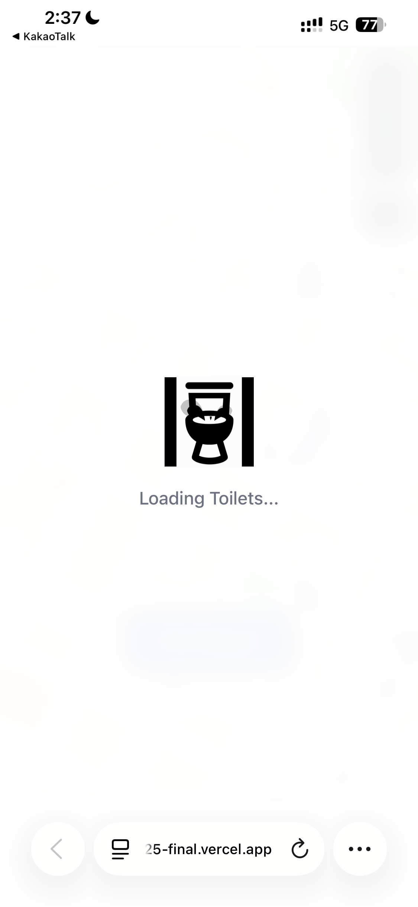
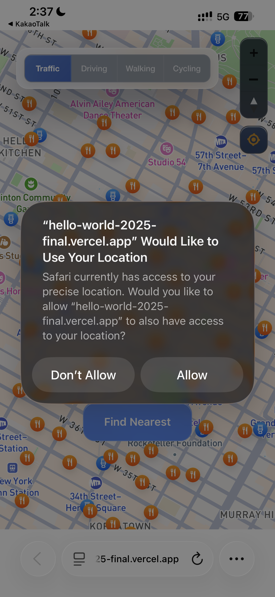
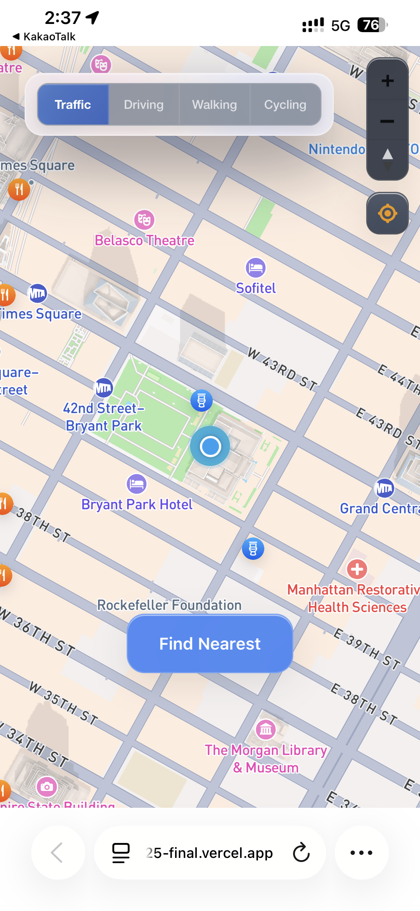
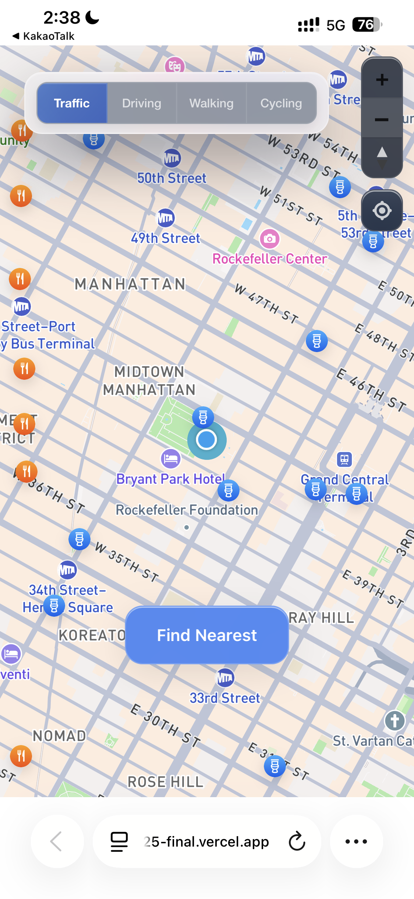
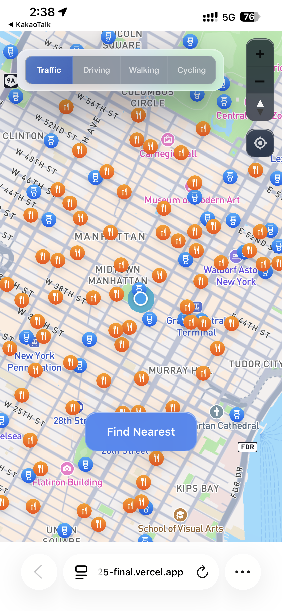

Hello! I'm Feifey

Who am I
A designer originally from Taipei and currently based in New York!
I graduated in graphic design from University of the Arts London, where I learned to think through form, structure, and visual language.
Over time, my curiosity shifted beyond how things look to how they work. How people navigate systems, make sense of interfaces, and experience design in motion.
This interest led me to interaction design, and I'm now pursuing an MFA in Interaction Design (IxD) at School of Visual Arts. Across my work, I'm drawn to projects that explore clarity, accessibility, and the emotional side of human–computer interaction.
Why design
I design because I enjoy asking why.
Why something feels confusing, why certain interactions exclude people, and how design can quietly guide users toward better experiences. Design gives me the tools to explore these questions through research, experimentation, and iteration.
Where can you find me when I'm not working?

at the beach

at the park

at a café

on my lens
or just somewhere laughing :)